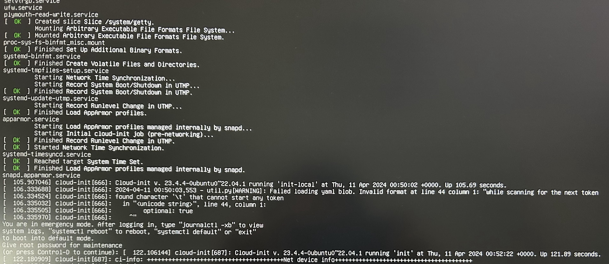
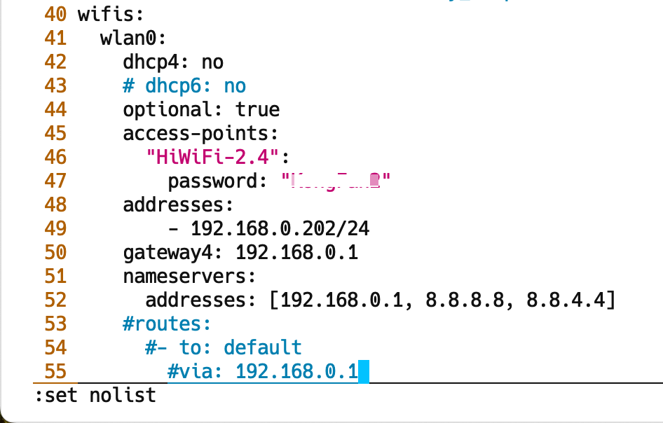
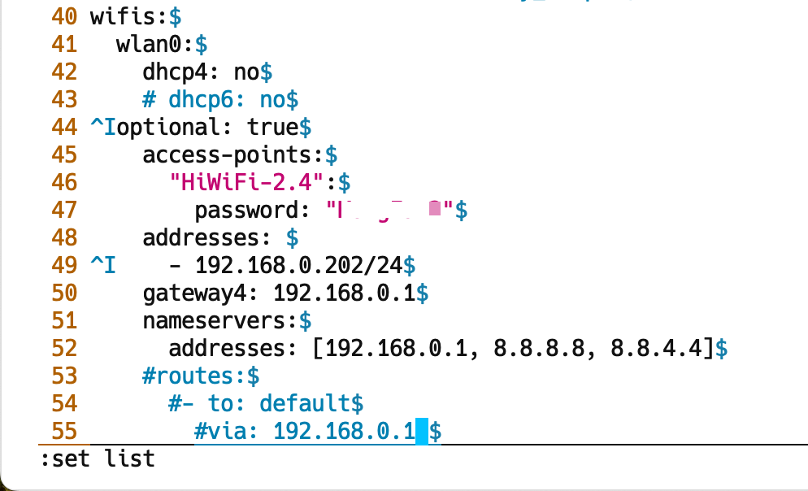

vim配置
本文梳理了 vim 配置相关基础知识并列出了一些常用的配置示例。
执行 vim --version 尾部有关于 vimrc 的位置说明:
λ ~/ vim --version
VIM - Vi IMproved 8.0 (2016 Sep 12, compiled Aug 17 2018 17:24:51)
Included patches: 1-503, 505-680, 682-1283
Compiled by root@apple.com
Normal version without GUI. Features included (+) or not (-):
system vimrc file: "$VIM/vimrc"
user vimrc file: "$HOME/.vimrc"
2nd user vimrc file: "~/.vim/vimrc"
user exrc file: "$HOME/.exrc"
defaults file: "$VIMRUNTIME/defaults.vim"
fall-back for $VIM: "/usr/share/vim"
Compilation: gcc -c -I. -Iproto -DHAVE_CONFIG_H -DMACOS_X_UNIX -g -O2 -U_FORTIFY_SOURCE -D_FORTIFY_SOURCE=1
Linking: gcc -L/usr/local/lib -o vim -lm -lncurses -liconv -framework Cocoa
- 系统级配置，对所有用户生效：
$VIM/vimrc=/usr/share/vim/vimrc； - 用户级配置1，对当前用户生效：
$HOME/.vimrc=~/.vimrc； - 用户级配置2，对当前用户生效：
~/.vim/vimrc。
在每个用户的主目录下，都有一个 vi 配置文件".vimrc"或".exrc"，没有的可以新建一个。
用户可以编辑它，使这些设置在每次启动 vi 时都有效。
vim配置可以在底行模式针对当前文档编辑设定，例如 :set ai 设定 autoindent，也可以设置到配置文件中（可省掉开头的冒号）。
配置语法#
options/features#
可通过 :help vimrc-intro 查看 vimrc 配置帮助。
具体配置选项可参考：/usr/share/vim/vim[0-9][0-9]/doc/options.txt
set/enable#
Typing ":set xxx" sets the option "xxx", or configure to .vimrc.
| short | long（origin） | comment |
|---|---|---|
| 'ic' | 'ignorecase' | ignore upper/lower case when searching |
| 'is' | 'incsearch' | show partial matches for a search phrase |
| 'hls' | 'hlsearch' | highlight all matching phrases |
unset/disable#
Prepend "no" to switch an option off:
:set noic
新建 .vimrc 或 .exrc#
vim 配置格式可参考 /usr/share/vim/vim[0-9][0-9]/vimrc_example.vim。
设置示例#
注释#
在C++语言中，以 // 开头的行视为注释；在 vim 脚本中，以 " 开头的行视为注释。
设置显示行号（nu/nonu）#
在打开 .vimrc（.exrc） 的 vim 编辑窗口中敲 i 键进入 insert 模式，打开布尔开关 nu:
按下 <Esc> 退回 normal 模式，再敲入 :wq（或 ZZ ）保存退出。
之后每次打开 vi/vim 时都会显示行号。
若不显示行号，直接删除或注释 set nu 这一配置行即可恢复默认；或者使能 nu 对应的布尔开关 nonu：
说明：
在 ~/.vimrc 配置文件中设置某项配置后，将对所有 vim 打开的文件全局有效。
若想在某次 vim 打开的文档中临时关闭行号显示，可在底行模式输入 :set nonu 临时关闭行号。
设置tab宽度为4（ts/tabstop）#
vi 中tab宽度默认为8，可以通过set tabstop赋值更改：
你也可以根据需要，开启softtabs，即用4个空格展开tab（expandtab）：
whitespace - Tab key == 4 spaces and auto-indent after curly braces in Vim
vi - Replace tabs with spaces in vim
filetype plugin indent on
" show existing tab with 4 spaces width
set tabstop=4
" when indenting with '>', use 4 spaces width
set shiftwidth=4
" On pressing tab, insert 4 spaces
set expandtab
" NOT to use smartindent
"set smartindent
linux - vim技巧：详解tabstop、softtabstop、expandtab三个选项的区别
修改配置开启 expandtab 后，vim 打开原来包含 tab 的文件，执行 :%retab 即可将所有的 tab 制表符展开为 4 个空格。
设置自动缩进（autoaudient）#
读取设置#
要查询某个配置开关或选项的值，可以 set 该变量为问号(?)即可查询。
:set <option> ?：查看特定选项
What's the difference between let and set?
:let g:netrw_liststyle：读取查看全局 let 变量的值。
fileencodings#
fileencodings 为文件编码格式：
*'fileencoding'* *'fenc'* *E213*
Sets the character encoding for the file of this buffer.
When 'fileencoding' is different from 'encoding', conversion will be
done when writing the file.
See 'encoding' for the possible values.
具体编码格式可查询关键字 encoding-names 和 encoding-values。
查看 fileencodings 的值：
vim 帮助文档的编码格式为：
fileencodings=ucs-bom,utf-8,default,latin1
Xcode 右侧的 File Inspector 中的 Text Settings | Text Encoding 可下拉选择当前代码文件的编码格式。
fileformat#
fileformat 为换行格式（Line Endings）：
*'fileformat'* *'ff'*
This gives the <EOL> of the current buffer, which is used for
reading/writing the buffer from/to a file:
dos <CR> <NL>
unix <NL>
mac <CR>
查看 fileformat 的值：
vim 帮助文档的换行格式为：
fileformat=unix
《vi下显示回车换行符等特殊符号》
《windows和linux文件CRLF转换》
《Difference between CR LF, LF and CR line break types?》
crlf.py: Replace CRLF (windows) line endings with LF (unix) line endings in files.
CR(Carriage Return): 回车，对应 ASCII 码为 0x13，可视转义字符为 \r；
LF(Line Feeding)：换行，对应 ASCII 码为 0x10，可视转义字符为 \n。
Windows 下使用 \r\n 换行；UNIX 则使用 \n 换行。
在 vim 中 :set list 显示的不可见字符中，Windows 行尾断行符标记为 ^M$，UNIX 行尾断行符标记为 $。
Xcode 右侧的 File Inspector 中的 Text Settings | Line Endings 有3中选项：
- macOS/Unix(LF)
- Classic Mac OS(CR)
- Windows(CRLF)
Sublime Text 的 ~/Library/Application Support/Sublime Text 3/Packages/Default/Preferences.sublime-settings
// Determines what character(s) are used to terminate each line in new files.
// Valid values are 'system' (whatever the OS uses), 'windows' (CRLF) and
// 'unix' (LF only).
"default_line_ending": "system",
default_line_ending: 默认 line ending 跟随系统，macOS 下是 LF。
show_line_endings: 默认不在状态栏显示当前 Line Ending。
底部状态栏将显示当前 Line Ending：
- Windows：Windows Line Endings(CRLF)
- Unix：Unix Line Endings(LF)
- CR：Mac OS 9 Line Endings(CR)
ubuntu#
ubuntu 下 man vim，FILES 部分列出了配置文件和说明文档相关的文件路径：
$ man vim
FILES
/usr/share/vim/vimrc
System wide Vim initializations.
~/.vimrc Your personal Vim initializations.
而 /usr/share/vim/vimrc 指向 /etc/vim/vimrc：
$ ls -l /usr/share/vim/
lrwxrwxrwx 1 root root 14 Mar 14 09:05 vimrc -> /etc/vim/vimrc
$ readlink /usr/share/vim/vimrc
/etc/vim/vimrc
如果只修改家目录下的 ~/.vimrc 的话，只对当前用户有效。
当 sudo vim 时，使用的是 /etc/vim/vimrc 中的全局配置。
因此，要想修改配置，对所有用户全局生效，需要修改 /etc/vim/vimrc。
runtime! debian.vim
if has("syntax")
syntax on
endif
" Source a global configuration file if available
if filereadable("/etc/vim/vimrc.local")
source /etc/vim/vimrc.local
endif
我们可以新建 /etc/vim/vimrc.local，这样配置对 vim 和 sudo vim 全局生效。
查看不可见字符#
Show invisibles
Vim: Show invisible characters
How to Display Hidden Characters in vim?
Make Vim show ALL white spaces as a character
:set list / :set nolist：显示/取消显示不可见字符。
在显示不可见字符的情况下，TAB 键显示为 ^I；而换行符(LF)显示为 $。
也可设置 listchars 选项定制特殊字符的显示，以下将 TAB 显示成 >—，而行尾多余的空白字符显示成 -。
某天重启树莓派（rpi4b-ubuntu）后，发现工作不正常，ssh 也连接不上，无奈只得插上 microHDMI 和无线键鼠。
看到控制台提示进入紧急模式，需要以 root 身份登录进去维护。
You are in emergency mode.
After logging in, type "journalctl -xb" to view system logs, "systemctl reboot" to reboot, or "exit" to boot into default mode.
Give root password for maintenance

根据上下文是 Cloud-init 启动是加载某个 YAML 配置文件失败（Failed loading yaml blob.），可能是格式有问题（Invalid format）。
参考 cloud-init 介绍，其采用 YAML 格式的配置文件，其配置文件为 /etc/cloud/cloud.cfg。
YAML 格式的具体说明参见 YAML 语言教程，需要注意的是 YAML 不支持tab键，但支持空格。
控制台显示 found character '\t' that cannot start any token，这个 tab 键（\t）就是问题的元凶。之前已有国际友人踩过坑 I'm getting "found character that cannot start any token while scanning for the next token"。
控制台显示的内容可以在系统日志 /var/log/syslog 中查看，接下来查看 cloud-init 日志文件 /var/log/cloud-init.log，定位显示是加载解析 /boot/firmware/network-config 出错。
2024-04-11 00:50:03,529 - util.py[DEBUG]: Read 1590 bytes from /boot/firmware//network-config
2024-04-11 00:50:03,530 - util.py[DEBUG]: Attempting to load yaml from string of length 240 with allowed root types (<class 'dict'>,)
2024-04-11 00:50:03,536 - util.py[DEBUG]: Attempting to load yaml from string of length 1590 with allowed root types (<class 'dict'>,)
2024-04-11 00:50:03,553 - util.py[WARNING]: Failed loading yaml blob. Invalid format at line 44 column 1: "while scanning for the next token
found character '\t' that cannot start any token
in "<unicode string>", line 44, column 1:
optional: true
^"
vim /boot/firmware/network-config 打开 boot 网络配置文件，看起来第 44 行对齐和缩进没啥问题：

输入 :set list 显示 tab 键，再看发现确实有非法的 tab 键：

手刃 tab 替换为两个空格，或者 :%s/\t/ /g 解决问题。需要格外注意对齐层级。
后来翻看系统日志，其实这个问题由来已久。当初制作 rpi4b-ubuntu 镜像时试图配置无线 WiFi 静态 IP，当时还纳闷为啥不成功。
重启后问题依旧，cloud-init 日志显示 schema.py[DEPRECATED]: Deprecated cloud-config provided（refer to askubuntu）。
原来最近使用树莓派挂载硬盘，在 /etc/fstab 中配置了开机 auto mount 项。后来将硬盘拔下来重新格式化了某个分区，可能 mount 参数有问题抑或 UUID 有变。
查看系统日志，看到有一些 systemd-udevd 模块的报错：
Apr 11 10:19:06 rpi4b-ubuntu systemd-udevd[462]: sda1: Process '/usr/bin/unshare -m /usr/bin/snap auto-import --mount=/dev/sda1' failed with exit code 1.
Apr 11 10:19:06 rpi4b-ubuntu systemd-udevd[473]: sda3: Process '/usr/bin/unshare -m /usr/bin/snap auto-import --mount=/dev/sda3' failed with exit code 1.
Apr 11 10:19:06 rpi4b-ubuntu systemd-udevd[463]: sda2: Process '/usr/bin/unshare -m /usr/bin/snap auto-import --mount=/dev/sda2' failed with exit code 1.
删除 /etc/fstab 中新近配置的 mount 条目，重启成功进入系统。后续修正了 /etc/fstab 中的 mount 条目，具体参考 rpi4b-ubuntu外挂硬盘配置samba共享服务。
参考#
实践中学习vim之vim配置文件、插件文件加载路径
优雅的配置 Vim
vim set 功能设定
某人的.vimrc：加详细注释
一套强大的vim配置文件+详细注释
很好很强大的vimrc（带注释版）
Vim 配置详解
vim配置的一些建议（附详细注释的vimrc）
Linux大棚版vimrc配置
Vim 配置入门 - 阮一峰
The Ultimate Vim Distribution
vgod/vimrc
kaochenlong/eddie-vim